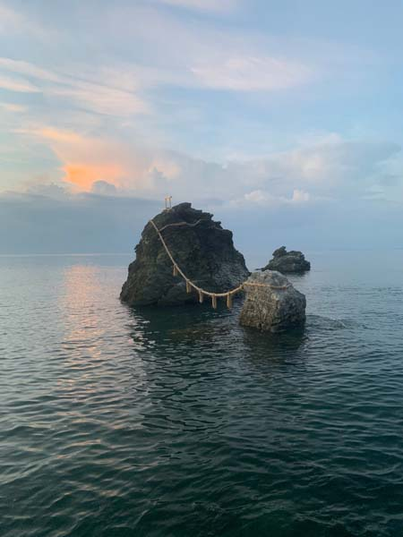
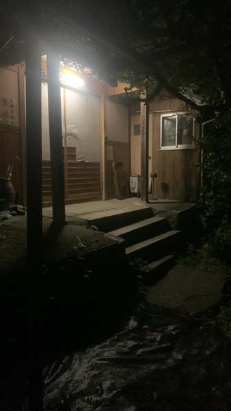

Ise-Shima journey (Kintetsu Mawaryanse pass), August 2026
TLDR: the pass is more than worse it, but because there were so many attractions I didn't enjoy many trains.
Day 1
Osaka → Toba
6:45 / 6:54 Osaka Loop Line, platform 11Tsuruhashi → Toba
7:11–9:08 Kintetsu Limited Express to Kashikojima
Breakfast by the sea, sandwich and tea
9:53 Chidorigahama
10:35 return to Toba
12:45–13:27 Toba
Lunch, sushi and rest
14:30 / 15:00 Dolphin Island Bay Cruise
16:00–17:20 Toba Aquarium, large aquarium famous for its marine animals and unusual species
18:00 Toba Station → Meotoiwa Higashi-guchi, Mie Kotsu bus 41
18:12 arrival
Stay at Taikoji Shukubo Hostel
Evening walk around Futami, beach and Meoto Iwa
Meoto Iwa, the famous “Wedded Rocks” connected by a sacred shimenawa rope
Dinner by the beach




Day 2
Ise Jingu, Kashikojima
Breakfast at hostel9:23–9:51 CAN Bus to Ise Jingu Naiku-mae
Ise Jingu, Japan’s most important Shinto shrine complex in Mie and a very old pilgrimage site
Explore Ise Jingu and Isuzugawa
13:01–13:39 train to Kashikojima
13:50–14:15 shuttle to Aqua Forest
Aqua Forest, a forested recreation and hot spring area
16:30–17:00 shuttle back
17:00–17:30 Kintetsu Express, Kashikojima → Toba
Alternative if late, 18:22 JR to Matsushita
Evening walk to the sea


Day 3
Ise Sea Paradise, Spain Mura
Breakfast at hostel or beach
Ise Sea Paradise
12:02–12:16 train to Toba
12:29–12:57 train to Shima-Isobe
Leave luggage at hotel
13:55–14:02 train to Ugata
Shuttle to Shima Spain Mura
Shima Spain Mura, a Spanish-themed amusement park with streets, buildings and attractions inspired by Spain
Himawari no Yu, hot spring bath
Ice cream
Last bus, 19:40 / 20:30
20:29–20:36 / 21:14–21:21 return trains


Day 4
Goza Shirahama, Shima Green Adventure
6:54 Goza Line bus from Isobe bus stop to Goza Shirahama
8:15 arrival
Breakfast on the beach
10:28 bus back to Ugata
Alternative buses, 9:15 / 11:28
Ugata
11:30 / 12:30 shuttle to Green Adventure
Green Adventure, outdoor adventure park in the forest
19:03–19:10 Ugata → Shima-Isobe
19:56 Kintetsu Express from Shima-Isobe to Osaka